Try accomplishing the three tasks above without reading the instructions for an added challenge. Although you could solve them using transformers, try only to use reader/writer/feature type parameters. It's possible!
After completing this lesson, you’ll be able to:
You've been given a starting workspace that reads community map data from an Esri geodatabase and writes it to GML and SQLite (parks only). However, the workspace needs several improvements:
These can be accomplished using reader/writer/feature type parameters. Let's get to work!
Try accomplishing the three tasks above without reading the instructions for an added challenge. Although you could solve them using transformers, try only to use reader/writer/feature type parameters. It's possible!
Open the starting workspace in FME Workbench (FME 2024.0 or later).
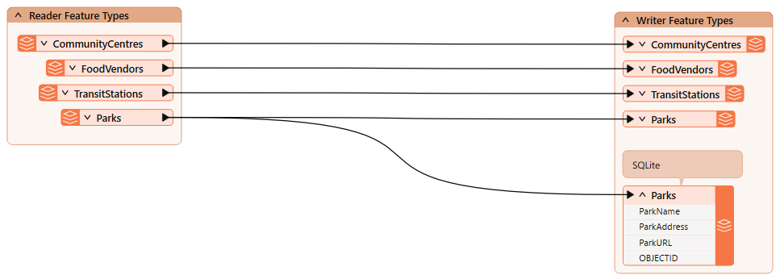
Run the workspace.
Inspect the CommunityCentres reader feature type cache. Note it has ten community centers, including the one we need to remove from the written data, Mount Pleasant.

Let's use a reader feature type parameter to remove the Mount Pleasant community center from the written data.
Double-click the CommunityCentre reader feature type to open its parameters, then enter the following partial SQL statement for WHERE Clause:
"CentreName" <> 'Mount Pleasant'
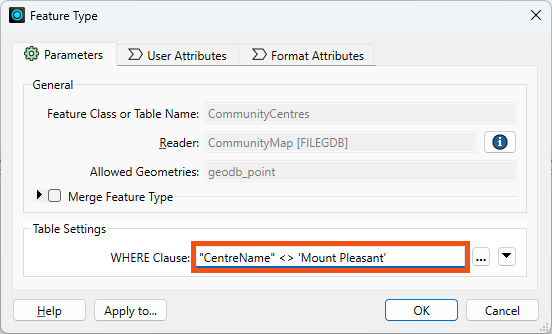
Click OK.
Run the workspace.
Inspect the CommunityCentre reader feature type cache again. Note that FME did not read (or, therefore, write) the Mount Pleasant feature:

Use this parameter "where" you can to avoid reading too much data! 😉
We cover more tips like this in our Optimize Workspace Performance course.
Next, let's fix the pretty print issue.
First, let's view the data without pretty print. Click one of the GML writer feature types and use the Open Containing Folder button to find the destination GML file:

Open it in Notepad or another text editor. Note how the text does not use indentation to indicate nesting:
...<gml:boundedBy><gml:Envelope srsName="EPSG:26910" srsDimension="3"><gml:lowerCorner>486494.0932 5456045.6164 0</gml:lowerCorner><gml:upperCorner>494255.29509999976 5460601.212200001 0</gml:upperCorner></gml:Envelope></gml:boundedBy><gml:featureMember><fme:TransitStations gml:id="id0b91e990-57bb-4e58-8861-515334e2b534"><fme:StationName>Waterfront</fme:StationName><fme:OBJECTID>1</fme:OBJECTID><gml:pointProperty><gml:Point srsName="EPSG:26910" srsDimension="2"><gml:pos>491874.0992999999 5459264.233100001</gml:pos></gml:Point></gml:pointProperty></fme:TransitStations></gml:featureMember>...
Find the Output [GML] writer in the Navigator. Then expand it to find its Parameters section, and expand that to find the Pretty Print parameter:
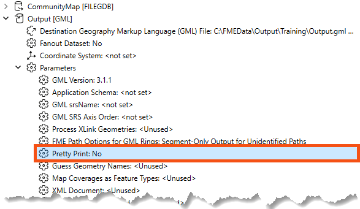
Double-click it to open the parameters dialog. Find Pretty Print again and set it to Yes:

Now, the written data will be pretty printed with indents.
Run the workspace.
Inspect the written GML file using Notepad or another text editor to see the difference:
...<gml:boundedBy> <gml:Envelope srsName="EPSG:26910" srsDimension="2"> <gml:lowerCorner>491133.7028000001 5456674.0671999995</gml:lowerCorner> <gml:upperCorner>494255.29509999976 5459264.233100001</gml:upperCorner> </gml:Envelope></gml:boundedBy><gml:featureMember> <fme:TransitStations gml:id="id5519c06b-d3d0-4b4c-92de-67caec9f13f1"> <fme:StationName>Waterfront</fme:StationName> <fme:OBJECTID>1</fme:OBJECTID> <gml:pointProperty> <gml:Point srsName="EPSG:26910" srsDimension="2"> <gml:pos>491874.0992999999 5459264.233100001</gml:pos> </gml:Point> </gml:pointProperty> </fme:TransitStations></gml:featureMember>...
In the next section, we'll look at an important writer feature type parameter: fme_db_operation.
We must create an SQLite database to set up a scenario where we might use this parameter. The starting workspace already has an SQLite writer and feature type. When you ran it earlier, you created the database.
Inspect the current state of the data by clicking the SQLite Parks writer feature type (it's annotated as such) and clicking the View Written Data button:
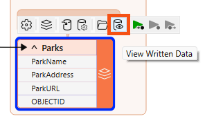
The database stores data about the parks:

Currently, a writer parameter, Overwrite Existing Database, is enabled. Therefore, FME creates the database from scratch each time it runs the workspace, ensuring it has the same number of records as the source data no matter how many times it runs.
To see how fme_db_operation works, we'll need to disable that writer parameter. Find it in the Navigator and change it to disabled (unchecked):
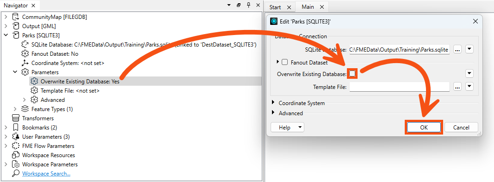
Now, if you were to run the workspace (don't!), you would append 69 records to the database. That's because the default database operation for FME writers is Insert. You can confirm this by examining the Parks SQLite writer feature type. Double-click it and observe that General > Feature Operation is set to Insert and Table Handling is set to Create If Needed:
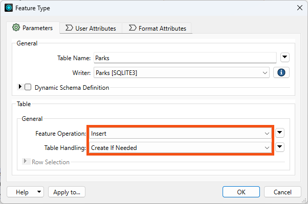
Suppose you accidentally mess up the starting database while doing this exercise. In that case, you can always enable Overwrite Existing Database, Insert, and Create If Needed and rerun the workspace to return to the starting state.
However, the imaginary scenario you need to adapt to now is that the City has passed a law stating that indigenous language place names must be used alongside English names. So, you have to update the park names. How can we update the names that already exist in the database?
A writer feature type parameter!
This is an imaginary scenario, but such initiatives do exist.
Change Feature Operation to fme_db_operation:

When you make this change, FME requires you to specify how features will be identified via the Row Selection > Match Columns parameter. Choose OBJECTID, as FME already generated this unique ID when it wrote the data originally:
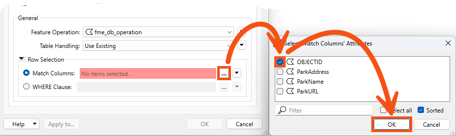
Now, the writer feature type will Insert/Update/Upsert/etc., based on the value of the fme_db_operation and OBJECTID attribute on incoming features.
So, let's configure the workspace to change a park name using an Update feature operation.
Add a Tester connected to the Parks reader feature type:

Ensure it's not connected to the writer feature type yet! We don't want to write a feature to the database before we are ready.
If you are nervous about this, you can right-click the writer feature type and Disable it until you are ready to write. Just make sure to Enable it before writing!
We'll update a single park name as an example for now, so configure the Tester to pass features where ParkName = Stanley Park:
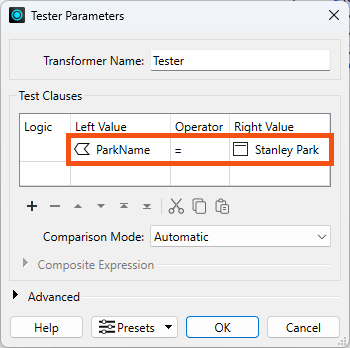
Run your workspace. You should now have a single feature with ParkName = Stanley Park exiting the Tester's Passed port:
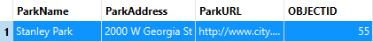
Add an AttributeCreator after the Tester:

Configure it like this:
| Output Attribute | Value |
| fme_db_operation | UPDATE |
| ParkName | Spapəy̓əq (Stanley Park) |

Spapəy̓əq roughly translates to "bent at the end" in Hunquminum, the language spoken by the Musqueum First Nation. It refers to a specific part of the area now known as Stanley Park, Brockton Point. The phonetic pronunciation is "spah-pee-ahk."
Learn more from the City of Vancouver or Vancouver Heritage Foundation.
Click OK.
Connect the AttributeCreator to the Parks SQLite writer feature type:
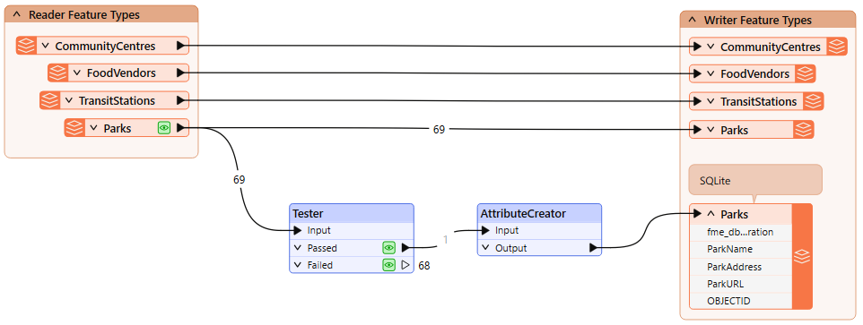
Run the workspace and inspect the written data. You should see there are still only 69 features, but the feature with OBJECTID = 55 now has the ParkName = Spapəy̓əq (Stanley Park), successfully updated in-place using a writer feature parameter:
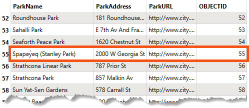
Using this method, you can control the database operation performed at the feature level. That's the power of parameters!
We could get the same output data using the parameters we started with: Insert, Create as Needed, and Overwrite Existing Database. However, these use cases are the same only if you want to write the entire table each time. If you want to update certain records each time the workspace runs, for example, loading new or changed records every 10 minutes, you would have to use the fme_db_operation parameter.